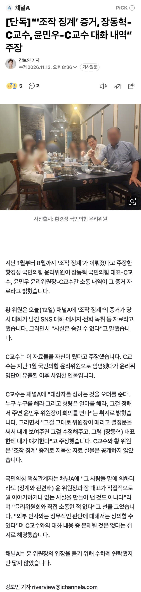
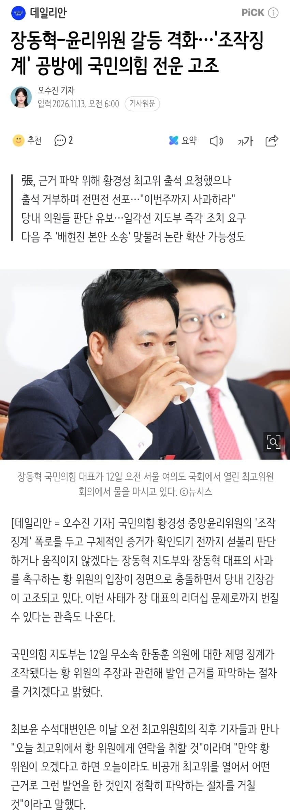
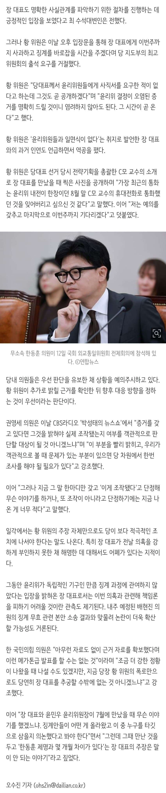

- 관련게시물 : 장동혁 "한동훈 조작 징계? 맞다…'언론 조작'을 징계한 것"
- 관련게시물 : 조작 징계' 폭로에 뒤집힌 국민의힘…장동혁 책임론으로 번지나


- 장동혁-윤리위원 갈등 격화…'조작징계' 공방에 국민의힘 전운 고조


일부 외부·대용량·응답 실패 미디어는 원본 링크로 남아 있습니다.
- 관련게시물 : 장동혁 "한동훈 조작 징계? 맞다…'언론 조작'을 징계한 것"
- 관련게시물 : 조작 징계' 폭로에 뒤집힌 국민의힘…장동혁 책임론으로 번지나

- 장동혁-윤리위원 갈등 격화…'조작징계' 공방에 국민의힘 전운 고조


댓글
수집 당시 댓글 94개
민민· · 11.12 20:42:25
난가썅년 · 11.12 20:42:27
ㅇㅇ · 11.12 20:44:00
· ooo100 · 11.12 20:44:50
· ㅇㅇ1 · 11.12 20:44:52
· ㅇㅇ · 11.12 20:46:50
· BB · 11.12 20:50:05
serenity · 11.12 20:46:23
신박하게써라 · 11.12 20:46:32
· ㅇㅇ · 11.14 08:30:43
내란우두 · 11.12 20:46:51
ㅇㅇ2 · 11.12 20:49:15
ㅇㅇ · 11.12 20:50:21
· ㅇㅇ · 11.14 08:30:50
HDH · 11.12 20:53:12
대대흥민 · 11.12 20:54:38
ㅇㅇ3 · 11.12 20:57:01
· ㅇㅇ · 11.14 08:30:57
ㅇㅇ · 11.12 21:01:33
· ㅇㅇ · 11.14 00:20:23
냠냠이쩝쩝 · 11.12 21:03:50
ㅇㅇ · 11.12 21:08:56
· ㅇㅇ · 11.14 08:31:07
ㅇㅇ4 · 11.12 21:09:53
송대리 · 11.12 21:11:23
담주
큰거온다
앵커의위선 · 11.12 21:14:34
징계대상자오더내리고 형량까지 ㅎㄷㄷ
ㅇㅇ · 11.12 21:19:38
ㅇㅇ5 · 11.12 21:26:07
스키치 · 11.12 21:29:42
· ㅇㅇ · 11.12 21:33:27
화적 · 11.12 21:32:10
ㄷㅂㅇ · 11.12 22:36:10
· ㅇㅇ · 11.14 00:05:56
ㅇㅇ · 11.13 20:42:21
ㅇㅇ · 11.13 20:43:37
· ㅇㅇ · 11.13 20:49:25
· ㅇㅇ · 11.13 21:35:19
· ㅇㅇ · 11.13 22:36:05
· 설사킹 · 11.14 03:32:27
· ㅇㅇ · 11.14 10:36:04
ㅇㅇ · 11.13 20:43:55
ㅇㅇ · 11.13 20:44:59
ㅇㅇ · 11.13 20:45:19
ㅇㅇ · 11.13 20:50:58
· ㅇㅇ · 11.13 21:07:38
· ㅇㅇ · 11.13 21:14:28
ㅇㅇ · 11.13 20:52:19
ㅇㅇ · 11.13 20:55:09
ㅇㅇ · 11.13 21:07:01
· ㅇㅇ · 11.13 21:15:16
· ㅇㅇ · 11.13 22:37:05
뽀삐
민주당
전략자산
· ㅇㅇ · 11.14 08:31:38
한동훈
민주당
전략자산
· ㅇㅇ · 11.14 08:31:46
ㅇㅇ · 11.13 21:08:34
ㅇㅇ · 11.13 21:17:33
ㅇㅇ · 11.13 21:18:43
ㅇㅇ · 11.13 21:18:45
· ㅇㅇ · 11.13 23:18:52
ㅇㅇ · 11.13 21:20:13
JungNu · 11.13 21:55:41
ㅇㅇ · 11.13 22:03:29
· ㅇㅇ · 11.13 22:24:02
· ㅇㅇ · 11.14 08:32:35
도토리2개 · 11.13 22:04:44
ㅇㅇ · 11.13 22:16:13
ㅇㅇ · 11.13 22:16:49
ㅇㅇ · 11.13 22:29:07
· ㅇㅇ · 11.13 22:30:10
ㅇㅇ · 11.13 22:29:53
ㅇㅇ · 11.13 22:36:37
보수는
대동훈이
답이다
· ㅇㅇ · 11.14 00:05:33
ㅇㅇ · 11.13 23:20:51
극우들이 장악한 국민의힘
ㅇㅇ · 11.13 23:43:19
ㅇㅇ · 11.13 23:48:46
ㅇㅇ · 11.13 23:51:54
도태의힘
· ㅇㅇ · 11.13 23:52:03
극우의힘
ㅇㅇ · 11.14 00:05:02
ㅇㅇ · 11.14 00:07:29
ㅇㅇ · 11.14 00:08:39
ㅇㅇ · 11.14 00:54:30
ㅇㅇ · 11.14 01:20:38
ㅇㅇ · 11.14 01:36:21
ㅇㅇ · 11.14 02:10:00
ㅇㅇ · 11.14 02:10:05
설사킹 · 11.14 03:34:23
ㅇㅇ · 11.14 06:18:59
ㅇㅇ · 11.14 07:00:20
ㅇㅇ · 11.14 08:56:24
ㅇㅇ · 11.14 09:27:07
· ㅇㅇ · 11.14 10:37:33
ㅇㅇ · 11.14 10:26:27
쿠두두룩 · 11.14 13:11:22
ㅇㅇ · 11.14 15:44:53
1231 · 11.14 17:11:33